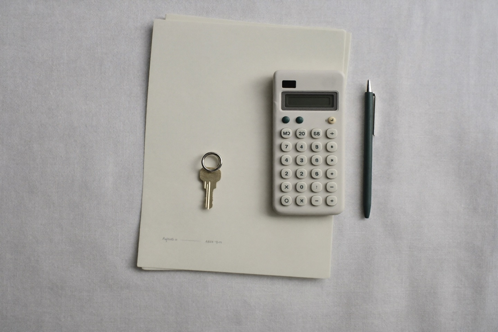
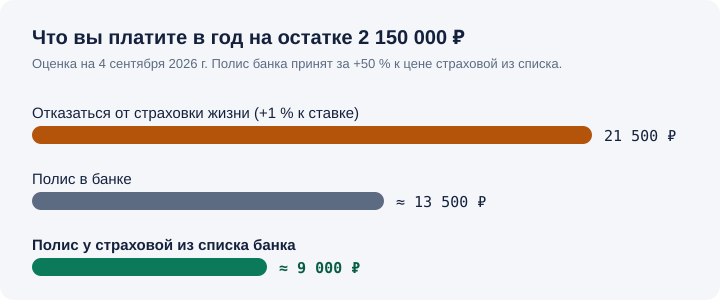

Страховка ипотеки в Сбербанке: полис или надбавка к ставке?
Отказ от страховки жизни стоит +1 % к ставке. Полис в банке — дороже, чем у страховых из его же списка, на 30–60 %. Посчитайте, что выгоднее именно вам.
Точные цены аккредитованных страховых — за минуту
Четыре поля — и вы сразу на списке цен страховых из списка Сбербанка на сегодня, с выбором, оплатой и полисом на e-mail. Список откроется на сайте партнёра Полис812 в новой вкладке; данные с этой формы никуда, кроме партнёра, не уходят.
Или посчитать прямо здесь, не открывая новую вкладку
Окно партнёра весит несколько мегабайт и иногда открывается 5–10 секунд — поэтому мы не грузим его заранее.
Не загрузилось — откройте его в новой вкладке. Второе мнение по ценам — калькулятор Пампаду.
Коротко. Страховка ипотеки в Сбербанке состоит из двух частей: страхование квартиры обязательно по закону, страхование жизни заёмщика — добровольно, но без него банк повышает ставку на 1–1,5 %. Заёмщик вправе купить полис в любой страховой из списка аккредитованных Сбербанком, и банк обязан его принять; у таких компаний то же покрытие стоит на 30–60 % дешевле, чем в СберСтраховании. При остатке долга 3 млн ₽ полис «жизнь + квартира» стоит от 3 900 ₽ в год для заёмщика 27 лет и от 6 600 ₽ для 40 лет (расчёты на 4 сентября 2026 г.). Для большинства заёмщиков полис у страховой из списка выгоднее и отказа, и полиса банка; продлевать его можно в другой компании каждый год, загрузив полис и чек в ДомКлик.

Как это работает
Посчитайте
Остаток долга берите из ДомКлика на дату продления — от него зависит цена.
Сравните аккредитованных
Только компании из списка Сбербанка — такой полис банк обязан принять.
Загрузите в ДомКлик
Полис и чек — в раздел «Загрузка полиса». Согласие банка не нужно.
Что обязательно, а что нет
| Вид страхования | По закону | На практике в Сбербанке | Доля в цене |
|---|---|---|---|
| Квартира (конструктив) | обязательно | без полиса кредит не выдадут и не продлят | ≈ 20–30 % |
| Жизнь и здоровье заёмщика | добровольно | без полиса ставка выше на 1–1,5 % | ≈ 70–80 % |
| Титул (право собственности) | добровольно | обычно только первые 3 года на вторичке | отдельно |
Деньги — в страховании жизни. Именно его банк продаёт дороже всего и именно его выгоднее покупать у независимой компании.
Пример. Остаток 2 150 000 ₽ — средний по России. Отказ от страховки жизни при надбавке +1 % — 21 500 ₽ переплаты в год. Полис в банке — около 13 500 ₽. Полис у страховой из списка банка — около 9 000 ₽.
Правильный ответ — покупать, но не у банка: минус 4 500 ₽ в год против полиса банка и минус 12 500 ₽ против отказа.

Аккредитованные страховые Сбербанка с онлайн-оформлением
Компании, чьи полисы принимает Сбербанк и которые оформляются онлайн за несколько минут (по данным партнёрских платформ на 4 сентября 2026 г.; актуальный список — на сайте банка):
- АльфаСтрахование
- Ренессанс Страхование
- ВСК
- РЕСО-Гарантия
- Росгосстрах
- СОГАЗ
- Абсолют Страхование
- ПАРИ
- Согласие
- Югория
- Астро-Волга
- Ак Барс Страхование
- Zetta Страхование
- Энергогарант
Полный разбор: кто дешевле для квартиры, кто для жизни, кого не принимают на ДомКлике →
Вопросы
Обязана ли я страховать жизнь по ипотеке Сбербанка?
Нет. По закону обязательно только страхование самой квартиры. Страхование жизни добровольное, но при отказе Сбербанк повышает ставку на 1–1,5 процентного пункта. Поэтому вопрос не «нужно ли», а «что дешевле» — это и считает калькулятор выше.
Можно ли купить страховку не в СберСтраховании?
Да. Заёмщик вправе оформить полис в любой компании, аккредитованной Сбербанком, и банк обязан его принять. У независимых компаний то же покрытие стоит на 30–60 % дешевле.
Как продлить страховку в другой компании?
За месяц до годовщины кредитного договора рассчитайте цену у аккредитованных компаний, оплатите полис онлайн и загрузите его с чеком в ДомКлик в раздел «Загрузка полиса». Согласие банка не требуется — только аккредитация страховой.
Что будет, если не продлить вовремя?
Банк вправе начислить неустойку и поднять ставку по кредиту до продления. Полис нужно оплатить до даты окончания предыдущего — поэтому считайте за 2–4 недели.
Почему полис дешевеет каждый год?
Страховая сумма равна остатку долга, а он уменьшается с каждым платежом. При продлении цену нужно считать заново от текущего остатка, а не продлевать по прошлогодней.